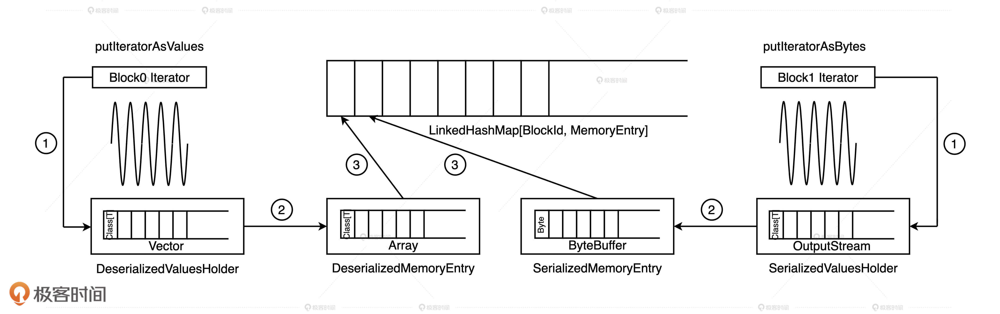
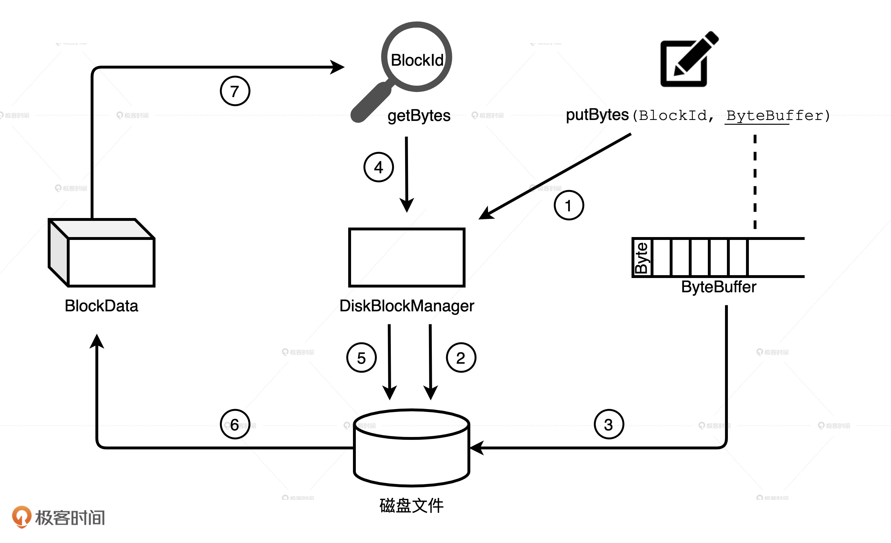

- 00 开篇词 Spark性能调优，你该掌握这些“套路”.md.html
- 01 性能调优的必要性：Spark本身就很快，为啥还需要我调优？.md.html
- 02 性能调优的本质：调优的手段五花八门，该从哪里入手？.md.html
- 03 RDD：为什么你必须要理解弹性分布式数据集？.md.html
- 04 DAG与流水线：到底啥叫“内存计算”？.md.html
- 05 调度系统：“数据不动代码动”到底是什么意思？.md.html
- 06 存储系统：空间换时间，还是时间换空间？.md.html
- 07 内存管理基础：Spark如何高效利用有限的内存空间？.md.html
- 08 应用开发三原则：如何拓展自己的开发边界？.md.html
- 09 调优一筹莫展，配置项速查手册让你事半功倍！（上）.md.html
- 10 调优一筹莫展，配置项速查手册让你事半功倍！（下）.md.html
- 11 为什么说Shuffle是一时无两的性能杀手？.md.html
- 12 广播变量（一）：克制Shuffle，如何一招制胜！.md.html
- 13 广播变量（二）：如何让Spark SQL选择Broadcast Joins？.md.html
- 14 CPU视角：如何高效地利用CPU？.md.html
- 15 内存视角（一）：如何最大化内存的使用效率？.md.html
- 16 内存视角（二）：如何有效避免Cache滥用？.md.html
- 17 内存视角（三）：OOM都是谁的锅？怎么破？.md.html
- 18 磁盘视角：如果内存无限大，磁盘还有用武之地吗？.md.html
- 19 网络视角：如何有效降低网络开销？.md.html
- 20 RDD和DataFrame：既生瑜，何生亮？.md.html
- 21 Catalyst逻辑计划：你的SQL语句是怎么被优化的？（上）.md.html
- 22 Catalyst物理计划：你的SQL语句是怎么被优化的（下）？.md.html
- 23 钨丝计划：Tungsten给开发者带来了哪些福报？.md.html
- 24 Spark 3.0（一）：AQE的3个特性怎么才能用好？.md.html
- 25 Spark 3.0（二）：DPP特性该怎么用？.md.html
- 26 Join Hints指南：不同场景下，如何选择Join策略？.md.html
- 27 大表Join小表：广播变量容不下小表怎么办？.md.html
- 28 大表Join大表（一）：什么是“分而治之”的调优思路？.md.html
- 29 大表Join大表（二）：什么是负隅顽抗的调优思路？.md.html
- 30 应用开发：北京市小客车（汽油车）摇号趋势分析.md.html
- 31 性能调优：手把手带你提升应用的执行性能.md.html
- Spark UI（上）深入解读Spark作业的“体检报告”.md.html
- Spark UI（下）：深入解读Spark作业的“体检报告”.md.html
- 期末考试 “Spark性能调优”100分试卷等你来挑战！.md.html
- 结束语 在时间面前，做一个笃定学习的人.md.html
- 捐赠
06 存储系统：空间换时间，还是时间换空间？
你好，我是吴磊。
今天，我们来学习Spark的存储系统，它和我们上一讲学过的调度系统一样，都是Spark分布式计算引擎的基础设施之一。
你可能会问：“在日常的开发工作中，除了业务逻辑实现，我真的需要去关心这么底层的东西吗？”确实，存储系统离开发者比较远。不过，如果把目光落在存储系统所服务的对象上，你很可能会改变这种看法。
接下来，咱们就先来看看Spark 存储系统都为谁服务，再去探讨它有哪些重要组件，以及它是如何工作的，带你一次性摸透存储系统。
Spark存储系统是为谁服务的？
Spark 存储系统用于存储 3个方面的数据，分别是RDD 缓存、Shuffle 中间文件、广播变量。我们一个一个来说。
RDD缓存指的是将RDD以缓存的形式物化到内存或磁盘的过程。对于一些计算成本和访问频率都比较高的RDD来说，缓存有两个好处：一是通过截断DAG，可以降低失败重试的计算开销；二是通过对缓存内容的访问，可以有效减少从头计算的次数，从整体上提升作业端到端的执行性能。
而要说起Shuffle中间文件，我们就不得不提Shuffle这个话题。在很多场景中，Shuffle都扮演着性能瓶颈的角色，解决掉Shuffle引入的问题之后，执行性能往往能有立竿见影的提升。因此，凡是与Shuffle有关的环节，你都需要格外地重视。
关于Shuffle的工作原理，我们后面会详细来讲。这里，咱们先简单理解一下Shuffle的计算过程就可以了。它的计算过程可以分为2个阶段：
- Map阶段：Shuffle writer按照Reducer的分区规则将中间数据写入本地磁盘；
- Reduce 阶段：Shuffle reader从各个节点下载数据分片，并根据需要进行聚合计算。
Shuffle中间文件实际上就是Shuffle Map阶段的输出结果，这些结果会以文件的形式暂存于本地磁盘。在Shuffle Reduce阶段，Reducer通过网络拉取这些中间文件用于聚合计算，如求和、计数等。在集群范围内，Reducer想要拉取属于自己的那部分中间数据，就必须要知道这些数据都存储在哪些节点，以及什么位置。而这些关键的元信息，正是由Spark存储系统保存并维护的。因此你看，没有存储系统，Shuffle是玩不转的。
最后，我们再来说说广播变量。在日常开发中，广播变量往往用于在集群范围内分发访问频率较高的小数据。利用存储系统，广播变量可以在Executors进程范畴内保存全量数据。这样一来，对于同一Executors内的所有计算任务，应用就能够以Process local的本地性级别，来共享广播变量中携带的全量数据了。
总的来说，这3个服务对象是Spark应用性能调优的有力“抓手”，而它们又和存储系统有着密切的联系，因此想要有效运用这3个方面的调优技巧，我们就必须要对存储系统有足够的理解。
存储系统的基本组件有哪些？
与调度系统类似，Spark存储系统是一个囊括了众多组件的复合系统，如BlockManager、BlockManagerMaster、MemoryStore、DiskStore和DiskBlockManager等等。
不过，家有千口、主事一人，BlockManager是其中最为重要的组件，它在Executors端负责统一管理和协调数据的本地存取与跨节点传输。这怎么理解呢？我们可以从2方面来看。
对外，BlockManager与Driver端的BlockManagerMaster通信，不仅定期向BlockManagerMaster汇报本地数据元信息，还会不定时按需拉取全局数据存储状态。另外，不同Executors的BlockManager之间也会以Server/Client模式跨节点推送和拉取数据块。
对内，BlockManager通过组合存储系统内部组件的功能来实现数据的存与取、收与发。
那么，对于RDD缓存、Shuffle中间文件和广播变量这3个服务对象来说，BlockManager又是如何存储的呢？Spark存储系统提供了两种存储抽象：MemoryStore和DiskStore。BlockManager正是利用它们来分别管理数据在内存和磁盘中的存取。
其中，广播变量的全量数据存储在Executors进程中，因此它由MemoryStore管理。Shuffle中间文件往往会落盘到本地节点，所以这些文件的落盘和访问就要经由DiskStore。相比之下，RDD缓存会稍微复杂一些，由于RDD缓存支持内存缓存和磁盘缓存两种模式，因此我们要视情况而定，缓存在内存中的数据会封装到MemoryStore，缓存在磁盘上的数据则交由DiskStore管理。
有了MemoryStore和DiskStore，我们暂时解决了数据“存在哪儿”的问题。但是，这些数据该以“什么形式”存储到MemoryStore和DiskStore呢？对于数据的存储形式，Spark存储系统支持两种类型：对象值（Object Values）和字节数组（Byte Array）。它们之间可以相互转换，其中，对象值压缩为字节数组的过程叫做序列化，而字节数组还原成原始对象值的过程就叫做反序列化。
形象点来说，序列化的字节数组就像是从宜家家具超市购买的待组装板材，对象值则是将板材根据说明书组装而成的各种桌椅板凳。显而易见，对象值这种存储形式的优点是拿来即用、所见即所得，缺点是所需的存储空间较大、占地儿。相比之下，序列化字节数组的空间利用率要高得多。不过要是你着急访问里面的数据对象，还得进行反序列化，有点麻烦。
由此可见，对象值和字节数组二者之间存在着一种博弈关系，也就是所谓的“以空间换时间”和“以时间换空间”，两者之间该如何取舍，我们还是要看具体的应用场景。核心原则就是：如果想省地儿，你可以优先考虑字节数组；如果想以最快的速度访问对象，还是对象值更直接一些。 不过，这种选择的烦恼只存在于 MemoryStore 之中，而DiskStore只能存储序列化后的字节数组，毕竟，凡是落盘的东西，都需要先进行序列化。
透过RDD缓存看MemoryStore
知道了存储系统有哪些核心的组件，下面，我们接着来说说MemoryStore和DiskStore这两个组件是怎么管理内存和磁盘数据的。
刚刚我们提到，MemoryStore同时支持存储对象值和字节数组这两种不同的数据形式，并且统一采用MemoryEntry数据抽象对它们进行封装。
MemoryEntry有两个实现类：DeserializedMemoryEntry和SerializedMemoryEntry，分别用于封装原始对象值和序列化之后的字节数组。DeserializedMemoryEntry用 Array[T]来存储对象值序列，其中T是对象类型，而SerializedMemoryEntry使用ByteBuffer来存储序列化后的字节序列。
得益于MemoryEntry对于对象值和字节数组的统一封装，MemoryStore能够借助一种高效的数据结构来统一存储与访问数据块：LinkedHashMap[BlockId, MemoryEntry]，即 Key 为BlockId，Value 是MemoryEntry的链式哈希字典。在这个字典中，一个Block对应一个MemoryEntry。显然，这里的MemoryEntry既可以是DeserializedMemoryEntry，也可以是 SerializedMemoryEntry。有了这个字典，我们通过BlockId即可方便地查找和定位MemoryEntry，实现数据块的快速存取。
概念这么多，命名也这么相似，是不是看起来就让人“头大”？别着急，接下来，咱们以RDD缓存为例，来看看存储系统是如何利用这些数据结构，把RDD封装的数据实体缓存到内存里去。
在RDD的语境下，我们往往用数据分片（Partitions/Splits）来表示一份分布式数据，但在存储系统的语境下，我们经常会用数据块（Blocks）来表示数据存储的基本单元。在逻辑关系上，RDD的数据分片与存储系统的Block一一对应，也就是说一个RDD数据分片会被物化成一个内存或磁盘上的Block。
因此，如果用一句话来概括缓存RDD的过程，就是将RDD计算数据的迭代器（Iterator）进行物化的过程，流程如下所示。具体来说，可以分成三步走。

既然要把数据内容缓存下来，自然得先把RDD的迭代器展开成实实在在的数据值才行。因此，第一步就是通过调用putIteratorAsValues或是putIteratorAsBytes方法，把RDD迭代器展开为数据值，然后把这些数据值暂存到一个叫做ValuesHolder的数据结构里。这一步，我们通常把它叫做“Unroll”。
第二步，为了节省内存开销，我们可以在存储数据值的ValuesHolder上直接调用toArray或是toByteBuffer操作，把ValuesHolder转换为MemoryEntry数据结构。注意啦，这一步的转换不涉及内存拷贝，也不产生额外的内存开销，因此Spark官方把这一步叫做“从Unroll memory到Storage memory的Transfer（转移）”。
第三步，这些包含RDD数据值的MemoryEntry和与之对应的BlockId，会被一起存入Key 为BlockId、Value 是MemoryEntry引用的链式哈希字典中。因此，LinkedHashMap[BlockId, MemoryEntry]缓存的是关于数据存储的元数据，MemoryEntry才是真正保存RDD数据实体的存储单元。换句话说，大面积占用内存的不是哈希字典，而是一个又一个的MemoryEntry。
总的来说，RDD数据分片、Block和MemoryEntry三者之间是一一对应的，当所有的RDD数据分片都物化为MemoryEntry，并且所有的（Block ID, MemoryEntry）对都记录到LinkedHashMap字典之后，RDD就完成了数据缓存到内存的过程。
这里，你可能会问：“如果内存空间不足以容纳整个RDD怎么办？”很简单，强行把大RDD塞进有限的内存空间肯定不是明智之举，所以Spark会按照LRU策略逐一清除字典中最近、最久未使用的Block，以及其对应的MemoryEntry。相比频繁的展开、物化、换页所带来的性能开销，缓存下来的部分数据对于RDD高效访问的贡献可以说微乎其微。
透过Shuffle看DiskStore
相比MemoryStore，DiskStore就相对简单很多，因为它并不需要那么多的中间数据结构才能完成数据的存取。DiskStore中数据的存取本质上就是字节序列与磁盘文件之间的转换，它通过putBytes方法把字节序列存入磁盘文件，再通过getBytes方法将文件内容转换为数据块。
不过，要想完成两者之间的转换，像数据块与文件的对应关系、文件路径等等这些元数据是必不可少的。MemoryStore采用链式哈希字典来维护类似的元数据，DiskStore这个狡猾的家伙并没有亲自维护这些元数据，而是请了DiskBlockManager这个给力的帮手。
DiskBlockManager的主要职责就是，记录逻辑数据块Block与磁盘文件系统中物理文件的对应关系，每个Block都对应一个磁盘文件。同理，每个磁盘文件都有一个与之对应的Block ID，这就好比货架上的每一件货物都有唯一的 ID 标识。
DiskBlockManager在初始化的时候，首先根据配置项spark.local.dir在磁盘的相应位置创建文件目录。然后，在spark.local.dir指定的所有目录下分别创建子目录，子目录的个数由配置项spark.diskStore.subDirectories控制，它默认是64。所有这些目录均用于存储通过DiskStore进行物化的数据文件，如RDD缓存文件、Shuffle中间结果文件等。

接下来，我们再以Shuffle中间文件为例，来说说DiskStore与DiskBlockManager的交互过程。
Spark默认采用SortShuffleManager来管理Stages间的数据分发，在Shuffle write过程中，有3类结果文件：temp_shuffle_XXX、shuffle_XXX.data和shuffle_XXX.index。Data文件存储分区数据，它是由temp文件合并而来的，而index文件记录data文件内不同分区的偏移地址。Shuffle中间文件具体指的就是data文件和index文件，temp文件作为暂存盘文件最终会被删除。
在Shuffle write的不同阶段，Shuffle manager通过BlockManager调用DiskStore的putBytes方法将数据块写入文件。文件由DiskBlockManager创建，文件名就是putBytes方法中的Block ID，这些文件会以“temp_shuffle”或“shuffle”开头，保存在spark.local.dir目录下的子目录里。
在Shuffle read阶段，Shuffle manager再次通过BlockManager调用DiskStore的getBytes方法，读取data文件和index文件，将文件内容转化为数据块，最终这些数据块会通过网络分发到Reducer端进行聚合计算。
小结
掌握存储系统是我们进行Spark性能调优的关键一步，我们可以分为三步来掌握。
第一步，我们要明确存储系统的服务对象，分别是RDD缓存、Shuffle和广播变量。
- RDD缓存：一些计算成本和访问频率较高的RDD，可以以缓存的形式物化到内存或磁盘中。这样一来，既可以避免DAG频繁回溯的计算开销，也能有效提升端到端的执行性能
- Shuffle：Shuffle中间文件的位置信息，都是由Spark存储系统保存并维护的，没有存储系统，Shuffle是玩不转的
- 广播变量：利用存储系统，广播变量可以在Executors进程范畴内保存全量数据，让任务以Process local的本地性级别，来共享广播变量中携带的全量数据。
第二步，我们要搞清楚存储系统的两个重要组件：MemoryStore和DiskStore。其中，MemoryStore用来管理数据在内存中的存取，DiskStore用来管理数据在磁盘中的存取。
对于存储系统的3个服务对象来说，广播变量由MemoryStore管理，Shuffle中间文件的落盘和访问要经由DiskStore，而RDD缓存因为会同时支持内存缓存和磁盘缓存两种模式，所以两种组件都有可能用到。
最后，我们要理解MemoryStore和DiskStore的工作原理。
MemoryStore支持对象值和字节数组，统一采用MemoryEntry数据抽象对它们进行封装。对象值和字节数组二者之间存在着一种博弈关系，所谓的“以空间换时间”和“以时间换空间”，两者的取舍还要看具体的应用场景。
DiskStore则利用DiskBlockManager维护的数据块与磁盘文件的对应关系，来完成字节序列与磁盘文件之间的转换。
每日一练
- 结合RDD数据存储到MemoryStore的过程，你能推演出通过MemoryStore通过getValues/getBytes方法去访问RDD缓存内容的过程吗？
- 参考RDD缓存存储的过程，你能推演出广播变量存入MemoryStore的流程吗？
期待在留言区看到你的思考和讨论，我们下一讲见！
© 2019 - 2023 Liangliang Lee. Powered by gin and hexo-theme-book.